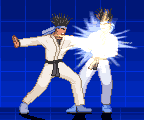
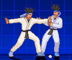
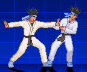
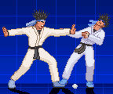
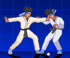
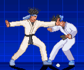
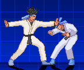

M.U.G.E.N, Elecbyte (c)1999-2009
Updated 17 September 2009
In tutorial 3, you saw how to begin making a state in the player's .cns. Here, you'll see how to define the attack parameters by using a HitDef controller. If your character doesn't already have all the required get-hit animations from the AIR documentation, you may want to test your character with KFM as the opponent for now (type "mugen player kfm").
The HitDef state controller is the last component to completing your attack state. You can think of it as assigning hit properties to the Clsn1 (red) boxes in your character's animation. It says how the boxes will hit the opponent.
Open up player.cns (or whatever you named your character's .cns file). Add some things to state 200, that you made in Tutorial 3:
[StateDef 200] anim = 200 ctrl = 0 type = S movetype = A ;*** Add this line *** physics = S velset = 0,0 ;*** Add this new block *** [State 200, HitDef] type = HitDef trigger1 = Time = 0 ;Activate at time = 0 (start of state) attr = S, NA ;Attributes of the HitDef (explained later) damage = 30 ;Damage points to deal ;*** End of new block *** [State 200, 1] type = ChangeState trigger1 = AnimTime = 0 value = 0 ctrl = 1 |
The "movetype = A" line in the StateDef tells MUGEN that this is an attack state. When you don't have this line, MUGEN will automatically assume that it's an idle state. This is important. If you forget this line, you won't be able to hit your opponent.
When the HitDef controller is executed, we say "a HitDef has been enabled" for your character. When a HitDef is enabled, if any Clsn1 box in your character's animation comes in contact with any Clsn2 box in your opponent's animation, your opponent will get hit. If your press Ctrl-C to turn on collision box display, a letter 'H' will appear to the bottom-right of your character whenever he has a HitDef that's enabled.
The parameters in the HitDef controller should be self-explanatory, except for the "attr" parameter. "attr" defines the attribute of your hit. In this case, the value "S, NA" means that it's a "Standing, Normal Attack". You always have to tell MUGEN what attribute your hit has. In other examples, you could have "C, SA" for "Crouching, Special Attack", or "A, HT" for "Aerial, Hyper Throw". You can read up on "attr" in the HitDef controller in the State controller docs for detailed info (there're a lot of other parameters, don't worry if you don't understand them all yet). We'll be making more references to the state controller docs (sctrls) throughout the rest of this tutorial.
If you try playing your character now, you'll notice the attack does hit the opponent, but doesn't really work right. We'll add parameters a bit at a time, until we get a hit that works nicely. From now on, our code snippets will show only the HitDef controller:
[State 200, HitDef] type = HitDef trigger1 = Time = 0 attr = S, NA damage = 30 pausetime = 12,12 ;*** Add this line *** hitsound = 5,0 ;*** Add this line *** guardsound = 6,0 ;*** Add this line *** sparkxy = 0,-70 ;*** Add this line *** |
Try running MUGEN with your player with these additions. You'll immediately notice some things. For one, both players get stunned for a short while when the hit connects. This is a result of using the "pausetime" parameter. The first value is the time (in ticks) to pause your character, and the second is the time to pause the player being hit. Try various values like "60,60", "60,10" and "10,60" to see the effect.
The "hitsound" and "guardsound" parameters determine what sounds get played when the hit comes in contact with the opponent. "sparkxy" positions the spark that you see when the hit connects (you'll want to adjust its value to fit your character's attack). Like for the other parameters we're going to add, you should look up these parameters in the sctrls docs for detailed descriptions. The descriptions you see in this tutorial are very brief.
Did you notice this attack can't be guarded against?
[State 200, HitDef] type = HitDef trigger1 = Time = 0 attr = S, NA damage = 30 guardflag = MA ;*** Add this line *** pausetime = 12,12 hitsound = 5,0 guardsound = 6,0 sparkxy = 0,-70 |
The "guardflag" parameter determines how the opponent can guard against your character's attack. "MA" stands for "Middle+Air". That means you can guard against it by holding back while standing, crouching, or while in the air. If you change it to just "M", then a jumping opponent can't guard it. If it's "HA", only a standing or jumping opponent can guard it.
Let's add some more parameters.
[State 200, HitDef] type = HitDef trigger1 = Time = 0 attr = S, NA damage = 30 guardflag = MA pausetime = 12,12 hitsound = 5,0 guardsound = 6,0 sparkxy = 0,-70 ground.type = High ;*** Add this line *** ground.slidetime = 10 ;*** Add this line *** ground.hittime = 12 ;*** Add this line *** ground.velocity = -5 ;*** Add this line *** air.velocity = -2,-3 ;*** Add this line *** |
Now when your character hits, the opponent gets knocked back. It's starting to look more like a real attack now!
"ground.type" determines what type of animation the opponent will go into when he's hit by your character's attack. "ground.slidetime" is how long the opponent will slide backwards after being hit, and "ground.hittime" is the time that the opponent will spend in the get-hit state before recovering. "ground.velocity" and "air.velocity" are the velocities the opponent gets when he's hit. For "ground.velocity", try numbers like these to see the effects: "5", "-20", "-5,-5" and "0,-5".
Besides using "ground.type", you can affect the opponenet's get-hit animation using "animtype":
[State 200, HitDef] type = HitDef trigger1 = Time = 0 attr = S, NA damage = 30 guardflag = MA pausetime = 12,12 hitsound = 5,0 guardsound = 6,0 sparkxy = 0,-70 animtype = Medium ;*** Add this line *** ground.type = High ground.slidetime = 10 ground.hittime = 12 ground.velocity = -5 air.velocity = -2,-3 |
If "ground.type" is "High", different values for "animtype" will affect the animation:
|
 |
 |
 |
| animtype = light | animtype = medium | animtype = hard |
Similarly, for "ground.type = Low":
|
 |
 |
 |
| animtype = light | animtype = medium | animtype = hard |
If you want your opponent to fall down, you can use the "fall" parameter.
[State 200, HitDef] type = HitDef trigger1 = Time = 0 attr = S, NA damage = 30 guardflag = MA pausetime = 12,12 hitsound = 5,0 guardsound = 6,0 sparkxy = 0,-70 animtype = Medium ground.type = High ground.slidetime = 10 ground.hittime = 12 ground.velocity = -1,-7;*** Modify this line *** air.velocity = -2,-3 fall = 1 ;*** Add this line *** |
The line "fall = 1" will make your opponent fall to the floor if he is hit by your attack. It's pretty straightforward. You might run into a gameplay issue, however. If you stand near the edge of the stage with your opponent between you and the edge, you'll find out that your character can hit him as he falls down. This is called a "juggle". The problem is that you can juggle the opponent over and over until he's KO'ed. There's a line you can add to the StateDef to solve this problem.
[StateDef 200] anim = 200 ctrl = 0 type = S movetype = A physics = S velset = 0,0 juggle = 5 ;*** Add this line *** |
Here's how juggles work. It's works as a point system, where you start with 15 juggle points (or whatever value you set for the "airjuggle" player variable). If you have the "juggle" parameter in your attack's StateDef, then every time you hit your opponent with that attack, your juggle points will be decreased by the value of the "juggle" paramter. If your current attack would decrease your juggle points to less than zero, then it won't be able to hit. The juggle system is activated the moment your opponent is hit by a HitDef with "fall = 1".
Try playing your character now and juggling the opponent. Notice you can only hit a maximum of 3 times now, before the opponent falls onto the floor. If you set "juggle = 3" you'd be able to hit 5 times, and if you set "juggle = 2" you could hit 7 times, and so on.
To see how many juggle points you have left, press Ctrl-C to turn on collision box display. When you hit an opponent, the number of juggle points is displayed at the end of the bottom line of text (in pink, starting with "target") right below your character.
All attacks should have a juggle parameter in the StateDef. If you use multiple states for a single attack (we'll cover that in a later tutorial) then you should have the juggle parameter only in the first state's StateDef. Take a look at kfm.cns to see what typical values might be.
Here are some things to pay attention to whenever you make a new attack state:
In the StateDef:Now's a good time to read up on the rest of the HitDef parameters in the sctrls docs. Here's a short list of some others that you might commonly use:
Once you're comfortable with making a simple attack state, it's time to learn how to get the character to enter that state. We'll save that for a later tutorial. If you want to go on ahead, take a look in kfm.cmd.